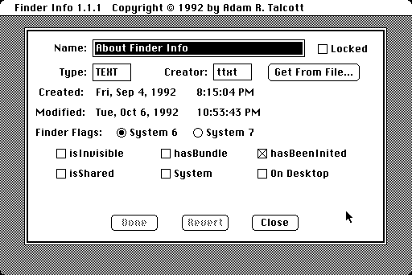

Download
finderinfo1.11.zip (16K) Finder Info 1.1.1 repackaged into a zipped hfs disk image and checksum file. The disk image can be mounted with Mini vMac.
finderinfo1.11.sit.hqx (12K) Finder Info 1.1.1 in the original format.
copyright: Adam R. Talcott
mod date: Oct 6, 1992
license: free for non-commercial use
For "modifying a document's Finder information (type, creator and Finder flags)." Should "be compatible with all members of the Macintosh family and System 4.1 and higher."
Of the 17 different programs I tested for setting file type and creator, this is the only one that worked perfectly in System 6. One drawback is that it can only operate on a single file, to do another file you need to launch it again. Also, having both a "Done" button and a "Close" button isn't immediately clear - Choosing "Done" is shortcut for choosing "Close" and then choosing to save changes.

If you find these downloads useful, please consider helping the Gryphel Project, which hosts them.
Here are the md5 checksums for the downloads, signed with Gryphel Key 5:
--------- GRY SIGNED TEXT --------- fdb502cc213db72df46389553eab25f1 finderinfo1.11.zip 310ac2ea947eb0620a013c9be1e2658c finderinfo1.11.sit.hqx ------- BEGIN GRY SIGNATURE ------- Gry/4Xa8CFcUzxdN/AqEcJd4IGiwoFYrsTzcwPczV6q4fo4FZD/3cc1LWUnlGwgH a1ftTMLkwQrMb3ivOOEd2jIlkfwAAPFcFYRaDKGejuI75wid96SWRdc6nFRD4WEv /AJ11oBRddPYcZgLc1nXKNg8rB6SEWjhqlYv0ApxuOKp9IueRXaZKsfbkwS1gAEP -------- END GRY SIGNATURE --------